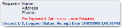

Open topic with navigation
Requests
About requests
Requests for patient records are submitted to a healthcare enterprise by various entities such as patients, consulting physicians, legal authorities, or government agencies. The ROI request becomes a list of patient records you select to release and is the basis for associated tracking and billing activities.
Requests for patient records focus not on demographic or identification data, but on tangible patient documents.
 About patient documents
About patient documents
Patient documents include:
- Document images (referred to as OneContent documents) that reside in the OneContent repository. These could be images of clinical documents (such as examination reports) or global documents (such as a driver's license).
The system outputs scanned documents at the same scale used during capture and not as rendered in the viewer (for example, a driver’s license is printed based on how it was scanned and not on best fit). The system shrinks images to fit the selected paper size while accommodating header, footer, and print margins. Margins are set by the document capture applications (that is, scan, COLD, or HL7). Color output depends on your print device; if color is not supported, the output is rendered in grayscale.
In addition, the DCS/QCI Workstation allows users to add pages to patient documents by either appending or inserting them. If pages are inserted into a patient document that has been released on an ROI request, then the page numbers on the released version will no longer match the version stored in the system. Appended pages do not have this affect.
- Non-OneContent documents that exist as paper-based items outside the repository.
- Electronic documents from an external clinical system that have been acquired from a local file system or via online connections and "attached" to the patient's record.
About ADI operations and ROI requests
No ROI pending or released status prevents ADI Delete, Modify, or Move operations in the OneContent system. All ADI actions can be performed. However, ADI actions (with the exception of re-ordering pages within a document) do affect whether an adjusted document can be released or re-released as part of an ROI request, based on conditions described in the table below.
| You re-order pages within a document that is already in an ROI request |
ROI permits the release/re-release. |
| You add new pages to a document that is already in an ROI request |
ROI permits the release/re-release. |
| You move or delete pages from a document that is already in an ROI request |
ROI does not permit the release or re-release of that ROI request.
The system lists affected documents in red in the Document Selected for Release panel in ROI and displays a message telling you why it cannot be released.
|
The system updates each ROI request that contains an ADI-adjusted document (even in cases where multiple ROI requests exist for the same document).
Access to requests
Your OneContent user profile controls your ability to access documents and use ROI functions.
If you do not have certain permissions, some buttons and menu options are hidden. If you cannot perform an operation, you most likely do not have appropriate permissions, and you should consult your system administrator. If you are logged into the ROI Module when rights are granted, you must log out and log back in for the change to take effect.
Based on your security rights, the ROI Module enables you to perform a variety of operations relating to ROI requests.
Operations controlled by your security rights include the following.
- Adjust charges
- Cancel request
- Create request
- Delete request
- Deny request
- Export request documents to PDF
|
- Modify request
- Pend request
- Post payments
- Print/Fax request documents
- View request
- Access VIP and/or locked records
|
Request status
All requests have an associated request status, and the system automatically updates the request status when certain events occur. You can also manually change request status when needed.
The status is automatically updated when you:
- Create a new request (status is set to Logged)
- Associate an Auth-Received or Auth-Received Denied request with a patient and a requestor (status is set to Logged)
- Generate a pre-bill quote (the system automatically updates the status to Pre-Billed)
- Release at least some documents on a request (status is set to Completed, but only if you select 'Yes' when prompted; if you select 'No,' the current status is retained)
Valid request statuses are:
- Auth-Received (cannot be manually assigned)
- Auth-Received Denied (cannot be manually assigned)
- Logged
- Pended
- Denied
- Canceled
- Pre-Billed (cannot be manually assigned)
- Completed
- Unknown (this occurs when the system cannot determine a status; you must manually assign a status)
While the system allows authorized users to manually change request status, your OneContent security permissions may restrict your options.
- The system automatically assigns the Auth-Received, Auth-Received Denied, and Pre-Billed status. You cannot manually assign these statuses, regardless of your security rights.
- To change the status of a request to Completed or Logged, you must have the ROI Create Request and/or the ROI Modify Request permission.
- To change the status to Pended, Denied, or Canceled, you must have explicit permission to pend, deny, or cancel requests. The system displays only the options you have permission to use.
Certain status changes trigger billing adjustments.
|
Status is changed to Denied or Canceled
|
A balance due exists for the request
|
The system automatically writes-off the balance due. The write-off is at the request level and not at the individual invoice level. The system resets the balance due to zero via a credit adjustment for the same amount as the balance due and makes an entry into the event history file.
Note: Subtotals that were used to derive the total cost are retained in case the status is later changed to Pended, Logged, or Pre-Billed.
|
|
Status is changed from Denied or Canceled
|
A balance due exists for the request
|
The system recalculates the balance due by reversing an earlier write-off (credit adjustment).
For example, if a $50 credit adjustment was made when the status was changed to Denied or Canceled, the system now debits $50 to restore the original balance due. The system always uses the previous write-off amount in the event of multiple write-offs.
The system also inserts an entry into the event history file.
|
New requests
Requests for information usually arrive manually (such as in person or by phone, fax, or mail) and are recorded on a paper document. This "authorization document" is scanned, indexed, and released using the DCS/QCI Workstation module. Once the authorization document is successfully released into the system, the system automatically creates a skeleton ROI request and assigns the "Auth-Received" (or "Auth-Received Denied") status to it. Requests are then available for processing and for searching.
How is the Auth-Received request created?
- During ROI Module installation, OneContent experts implement a process that creates an entry in the OneContent patients table for every month (where MRN=yyyymm), and an entry in the system Encounters table for every day (where Encounter number=yyyymmdd). These entries are referred to as "day folders." Installers also configure "Auth-Received" and "Auth-Received Denied" document types to use with authorization documents.
- At the DCS/QCI Workstation, users scan one or more authorization documents and associate the Auth-Received document type and an MRN-Encounter number with each document. For an existing OneContent patient, the MRN-Encounter number represents the actual patient. For a supplemental (or non- OneContent) patient, the MRN-Encounter number represents a day folder.
- At the DCS/QCI Workstation, users release the batch to the normal release queue, and the batch is subsequently processed by the Index Upload component. Because the Auth-Received document type is configured to require assignments, the system creates a workflow assignment for each document, and then adds the document to the system database.
- The OneContent Workflow Agent processes these workflow assignments by creating ROI requests for each document. For an OneContent patient, the request contains the patient's MRN-Encounter number. For a non-OneContent patient, the request contains the day folder's MRN-Encounter number, and ROI Module users must enter patient information when they access the request.
Note: Scanning the authorization document is optional. You can create an ROI request manually without scanning the authorization. However, for several reasons, scanning the authorization is the preferred method of creating an ROI request.
- The authorization will be properly associated with the request and will pass through status events in the proper sequence.
- If you manually create a request and then scan its corresponding authorization document, you will create a duplicate request.
Request reasons
You must provide a reason when you create a request. The system displays a list of reasons that have been defined by your site and allows you to select a reason when you create the request.
Requestor information box
The requestor information box displays on most of the screens used to maintain requests. The information box identifies the requestor's type (attorney, patient, and so on), name, address and contact number, and whether a pre-payment and/or certification letter are required. It also displays the request ID, current status and date of receipt. For example:

Requests from start to finish
Releasing documents to a requestor is a multi-step procedure. Only one user at a time can actively modify a request. Other users can only view information while the request is in use.
- Create the request.
- Identify the requestor.
- Select patients and patient documents and/or attachments to include on the request.
- Enter billing and shipping charges, discounts, and credits.
- Pre-bill (if required).
- Obtain a certification letter (if required).
- Release the documents along with a cover letter (optional) and invoice (optional).
Auditing
Every status change and ROI action can be audited.
Auditing is controlled by OneContent settings for each facility. Your system can be configured to audit the following events for requests:
- Uploaded (audit code N) - audits the acquisition of Clinical Summary documents from an external clinical system
- Released (audit code R) - also audits the success or failure of turnaround time notifications that are sent to clinical systems when documents are released
- ROI Log (audit code 1)
- ROI Edit (audit code 2) - includes Completed, Logged, and Pre-Billed status events
- ROI Delete (audit code 3)
- ROI Deny (audit code 4)
- ROI Cancel (audit code 5)
- ROI Pend (audit code 6)
- ROI Post (audit code 7)
- ROI View (audit code 8)
- ROI Report (audit code 9)
For each status change event, the audit file captures who made the change, the previous and new status, the date and time of the change, and facility, encounter, and MRN information.
What do you want to do?
For requests:
Find a request
Process an Auth-Received request
Create a request
Select or change a requestor
Add a patient to a request
Change request status
Complete a request
Delete a request
Maintain comments
View event history
View release history
For patient documents and ROI letters:
Learn more about attachments
Learn more about letters
Learn more about printing, faxing, saving or emailing documents
Learn more about output jobs and queues
Add documents to a request
Add or edit non-MPF document information
Download attachments
Add attachments to a request
Delete an attachment from a request
Release documents
Re-release documents
Resend documents
For release and invoice:
Learn more about release and invoice
For form descriptions:
View the Find/Create Request form description
View the Request Information form description
View the Patient Information form description
View the Release & Invoice form description
View the Release History form description
View the Event History form description
View the Comments form description
View the Letters form description